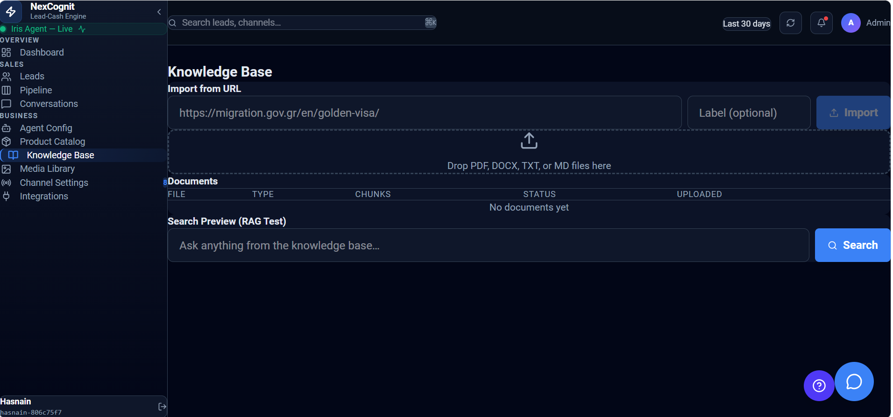

Knowledge Base
The Knowledge Base is where you add business information that helps Iris answer customer questions more accurately. It turns generic AI responses into more useful, company-specific support.
Knowledge Base overview
The Knowledge Base gives your team a simple way to feed Iris with the information it needs to respond with confidence. By adding trusted content, you help ensure that customer conversations stay relevant, helpful, and aligned with your business.

What the Knowledge Base is used for
The Knowledge Base is used to store information that Iris can reference during conversations. This may include product details, pricing guidance, policies, service descriptions, FAQs, or internal business context that should shape answers.
Adding content by uploading files
You can upload files such as PDFs, documents, or other written materials to add information to the Knowledge Base. This is a practical option when you already have structured content that should be reused in conversations.
Adding content by importing website URLs
If your business information lives on a website, you can import URLs directly into the Knowledge Base. This helps bring in up-to-date content from your site and keeps the knowledge source connected to your public-facing information.
Adding content by pasting text manually
For quick updates or one-off information, you can add content by pasting text directly into the Knowledge Base. This is useful for FAQs, product notes, or short guidance that needs to be made available immediately.
How Iris uses Knowledge Base content
When a customer asks a question, Iris can use the content in the Knowledge Base to build a more relevant answer. Instead of relying only on general AI knowledge, Iris can respond using the specific information your business has provided.
Why accurate business information matters
Keeping your Knowledge Base accurate is essential because Iris’s responses depend on the quality of the information it can access. Outdated or incomplete content can lead to confusion, incorrect answers, or missed opportunities to help the customer effectively.
Best practices
- Keep content current so Iris can answer with confidence.
- Use clear, business-specific information rather than generic wording.
- Upload or update content regularly as products and policies change.
- Review important topics such as pricing, availability, and support policies often.